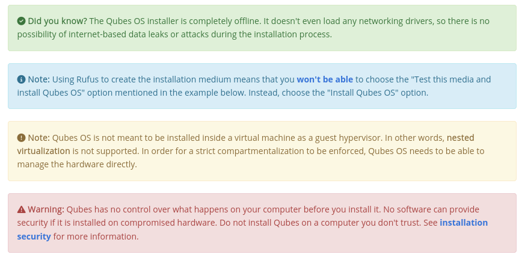

網站風格指南
此頁面說明我們在建置和維護網站時遵循的標準。修改網站時請遵循這些指南和慣例。關於文件方面的標準，請參閱 文件風格指南。
程式碼慣例
以下慣例適用於整個網站，包括用 HTML、CSS、YAML 和 Liquid 編寫的所有內容。這些慣例旨在多位協作者同時工作時保持程式碼庫的一致性。它們應被理解為一套維護此特定程式碼庫秩序的實用規則，而非客觀正確或良好的陳述。
一般做法
使用註釋來說明不同程式碼區塊的目的。這使檔案更易於理解和導覽。
使用描述性的變數名稱。切勿使用一或兩個字母的變數名稱。避免晦澀的縮寫和自創詞語。
一般來說，讓他人容易閱讀您的程式碼。未來的您會感謝自己，您的協作者也會！
`不要重複自己（DRY）！<https://en.wikipedia.org/wiki/Don%27t_repeat_yourself>`__ 與其多次重複相同的程式碼區塊，不如將其抽象到單獨的檔案中，並在需要的地方
include該檔案。
空白字元
始終使用空格。切勿使用定位符號。
每個縮排層級應恰好為兩（2）個空格。
每當您新增開始標籤時，縮排下一行。（例外：如果您在同一行開啟和關閉標籤，則不要縮排下一行。）
Liquid 的縮排方式與 HTML 相同。
一般來說，每相鄰兩行的起始欄位間距不應超過兩個空格（如下例所示）。
不要有空行。（提示：當您覺得需要空行時，請在該行新增註釋。）
縮排範例
以下是一個遵循縮排規則的範例：
<table>
<tr>
<th title="Anchor Link"><span class="fa fa-link"></span></th>
{% for item in secs.htmlsections[0].columns %}
<th>{{ item.title }}</th>
{% endfor %}
</tr>
{% for canary in site.data.sec-canary reversed %}
<tr id="{{ canary.canary }}">
<td><a href="#{{ canary.canary }}" class="fa fa-link black-icon" title="Anchor link to Qubes Canary row: Qubes Canary #{{ canary.canary }}"></a></td>
<td>{{ canary.date }}</td>
<td><a href="https://github.com/QubesOS/qubes-secpack/blob/master/canaries/canary-{{ canary.canary }}-{{ canary.date | date: '%Y' }}.txt">Qubes Canary #{{ canary.canary }}</a></td>
</tr>
{% endfor %}
</table>
Markdown 風格指南與慣例
另請參閱 如何編輯網站。
部分 Qubes OS 網站頁面以純文字 Markdown 檔案儲存在 qubesos.github.io 儲存庫中。在對 Markdown 檔案做出貢獻時，請遵守以下風格慣例。如果您不熟悉 Markdown 語法，此處 是一個很好的資源。
超連結語法
使用非參考風格的連結，例如 [website](https://example.com/)。*不要*使用參考風格的連結，例如 [website][example]、[website][] 或 [website]。這有助於在地化流程。
相對 vs. 絕對連結
對於內部網站連結，始終使用相對路徑而非絕對路徑。例如，使用 /donate/ 而非 https://www.qubes-os.org/donate/。
在以下情況下可以使用絕對 URL：
外部連結
Git 儲存庫檔案如
README.md和CONTRIBUTING.md，因為它們不是網站本身的一部分，而是支援網站的輔助基礎設施
此規則很重要，因為對內部網站連結使用絕對 URL 會破壞：
離線提供網站服務
網站在地化
生成離線文件
自動將 Tor Browser 訪客重新導向至洋蔥服務鏡像上的正確頁面
圖片連結
若要將圖片新增到頁面，請在主文件中使用以下語法。
[](/attachment/doc/image.png)
這會使圖片成為圖片檔案的超連結，允許讀者點擊圖片以單獨檢視完整圖片。這很重要。遵循最佳實踐，我們的網站具有響應式設計，可在所有螢幕尺寸上適當呈現。在較小的螢幕（例如行動裝置）上檢視此頁面時，圖片會自動縮小以適應螢幕。如果訪客無法點擊圖片以檢視完整尺寸，則根據他們的裝置，他們可能無法清楚看到圖片中的細節。
此外，確保僅連結到 qubes-attachment 儲存庫中的圖片。不要嘗試連結到位於其他網站上的圖片。
HTML 與 CSS
不要在 Markdown 文件中編寫 HTML（除非在罕見且無可避免的情況下，例如 警示）。特別是，切勿為了樣式、格式或空白控制而包含 HTML 或 CSS。那些應放在 (S)CSS 檔案中。
標題
不要使用 h1 標題（單一 # 或 ====== 底線）。這些會從 YAML 前置資料中的 title: 行自動生成。
使用 Atx 風格的標題語法：## h2、### h3 等。不要使用底線語法（-----）。
縮排
使用空格而非定位符號。在適當的地方使用懸掛縮排。
列表
如果合適，讓編號列表中的數字在 Markdown 來源碼和 HTML 輸出之間保持一致。有些使用者直接閱讀 Markdown 來源碼，這使編號列表更易於理解。
程式碼區塊
在編寫程式碼區塊時，盡可能使用 語法高亮 <https://github.github.com/gfm/#info-string>`__（參閱 `此處 <https://github.com/jneen/rouge/wiki/List-of-supported-languages-and-lexers>`__了解支援的語言列表）。使用 ``[...]` 表示省略的內容。
換行
不要強制換行，除非必要（例如在程式碼區塊內）。
不要使用 Markdown 語法進行風格設計
例如，常見的誘惑是使用塊引用（以 > 字元開頭的行）來在風格上將某些文字與文件的其他部分區分開來，例如：
> **Note:** This is an important note!
此呈現為：
注意： 這是一條重要的備註！
這有兩個問題：
這違反了 內容與表現分離 的原則，因為它濫用標記語法以達到非預期的風格效果。Markdown（以及任何 HTML）應體現文件的內容，而呈現則由 (S)CSS 處理。
這是對並非實際引用的文字濫用引用語法。（您並不是在引用任何人。您只是在告訴讀者注意某事，並試圖在視覺上吸引他們的注意力。）
相反地，一個在風格上區分文字部分的適當方式範例是使用 警示。也要考慮到額外的樣式和視覺區分可能根本沒有必要。在多數情況下，傳統的寫作方法就完全足夠了，例如：
**Note:** This is an important note.
此呈現為：
注意： 這是一條重要的備註。
警示
警示是用於引起讀者對重要資訊（例如警告）注意的 HTML 區段，也用於風格目的。它們通常被設計為彩色文字框，通常伴隨圖示。警示一般應適度使用，以免引起`警示疲勞 <https://en.wikipedia.org/wiki/Alarm_fatigue>`__，且由於它們必須用 HTML 而非 Markdown 編寫，這使得原始碼可讀性降低，且更難用於在地化和自動化目的。以下是幾種警示類型及其推薦圖示的範例：
<div class="alert alert-success" role="alert">
<i class="fa fa-check-circle"></i>
<b>Did you know?</b> The Qubes OS installer is completely offline. It doesn't
even load any networking drivers, so there is no possibility of
internet-based data leaks or attacks during the installation process.
</div>
<div class="alert alert-info" role="alert">
<i class="fa fa-info-circle"></i>
<b>Note:</b> Using Rufus to create the installation medium means that you <a
href="https://github.com/QubesOS/qubes-issues/issues/2051">won't be able</a>
to choose the "Test this media and install Qubes OS" option mentioned in the
example below. Instead, choose the "Install Qubes OS" option.
</div>
<div class="alert alert-warning" role="alert">
<i class="fa fa-exclamation-circle"></i>
<b>Note:</b> Qubes OS is not meant to be installed inside a virtual machine
as a guest hypervisor. In other words, <b>nested virtualization</b> is not
supported. In order for a strict compartmentalization to be enforced, Qubes
OS needs to be able to manage the hardware directly.
</div>
<div class="alert alert-danger" role="alert">
<i class="fa fa-exclamation-triangle"></i>
<b>Warning:</b> Qubes has no control over what happens on your computer
before you install it. No software can provide security if it is installed on
compromised hardware. Do not install Qubes on a computer you don't trust. See
[installation security](/doc/install-security/) for more
information.
</div>
這些呈現為：

寫作指南
關於寫作指南，請參閱 rST 文件風格指南中的 適當章節，但以下情況例外：
撰寫命令行範例
在提供命令行範例時：
告訴讀者在哪裡開啟終端機（dom0 或特定的 domU），並在程式碼區塊中顯示命令及其輸出（如果有的話），例如：
Open a terminal in dom0 and run: ``` $ cd test $ echo Hello Hello ```
在每個命令前面加上適當的命令提示字元：在 Linux 系統上，提示字元至少應包含尾隨的
#``（適用於 ``root使用者）或$``（適用於其他使用者），在 Windows 系統上則為 ``>。不要嘗試在程式碼區塊內新增註釋。例如，不要這樣做：
Open a terminal in dom0 and run: ``` # Navigate to the new directory $ cd test # Generate a greeting $ echo Hello Hello ```
每個註釋前面的
#符號與 root 命令提示字元有歧義。請改為將註釋放在程式碼區塊*外部*的普通文章中。
Git 慣例
請遵循我們的 Git 送交訊息指南。